Chapter 2 Describing the World With Data
This Chapter is designed to work with Lecture 2.
Here, I will demonstrate a number of important concepts about data displays and descriptions.
First, let’s find some data to play with. In the following examples I will use some data from the Johns Hopkins Coronavirus Resource Center as at April 26 2022, which contains data by country about cases, deaths, and mortality for COVID.
However, as of 2023, the JHCRC ceased collecting data, and their archival data is available on their github:
https://github.com/CSSEGISandData/COVID-19
However, I do think it would be quite hard to recreate the exact snapshot in time of the data set we are using here.
I’m going to use the top 20 countries in terms of raw number of cases
To demonstrate how we can easily change people’s views of a data set, let’s run some bar charts:
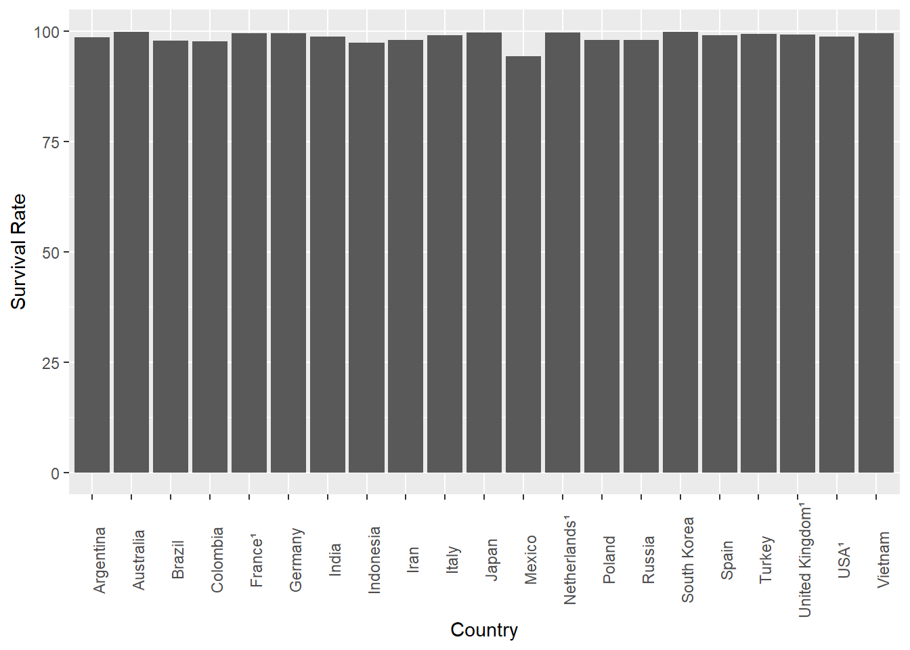
One thing we could do is change the orientation of the bars…
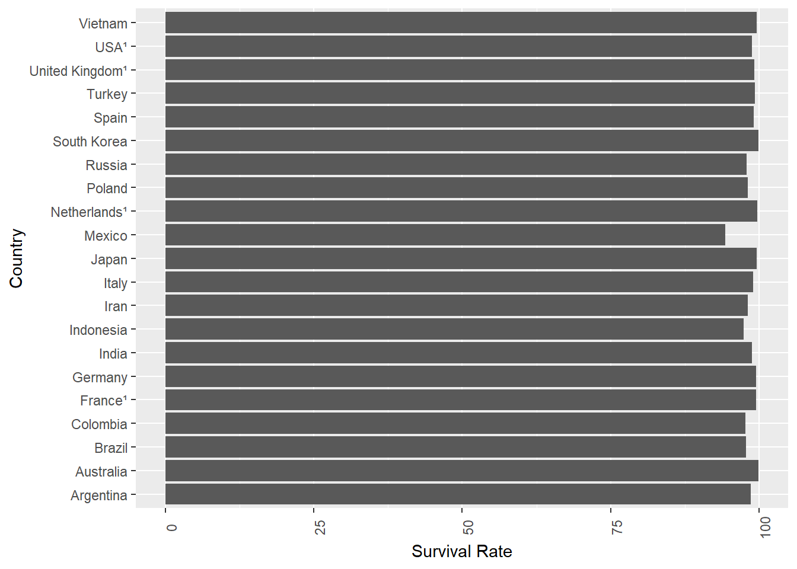
That’s nice. The basic conclusion we can draw is everyone is pretty much the same in terms of survival rate, although Mexico is a bit down.
Interestingly, it seems to me that the variation is more pronounced in this presentation where you look ‘down’ a line of results, than above where you look across. I’m not aware of any theory behind why, or even if anyone has ever noted that before, but it’s definitely something I noticed here.
Either way, if I wanted to make everyone think that COVID survival rates were really different, there’s a simple trick I could use:
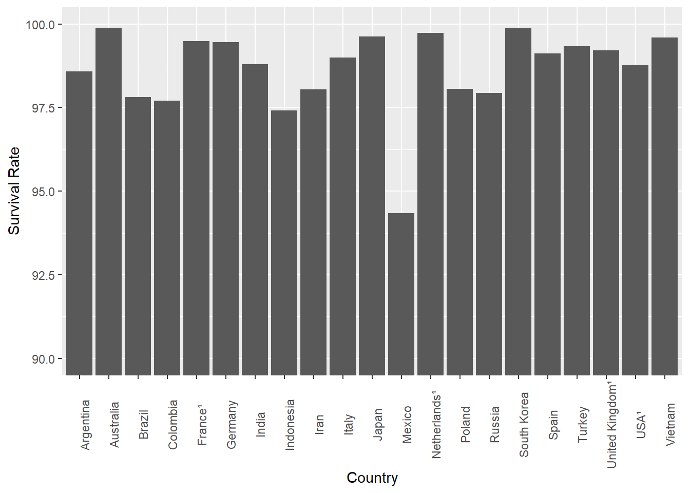
Wow, how do you like that! What’s different?
Changing the scale of the y-axis is an old trick, and when used to manipulate opinion it’s a bad thing. However, there is a case to say we need to know what we want to say, before we decide how to say it. When does ‘making sure we see the right message’ move into ‘outright manipulation / misrepresentation?’.
Here’s another common way this type of data is presented in media and non-scientific reports:
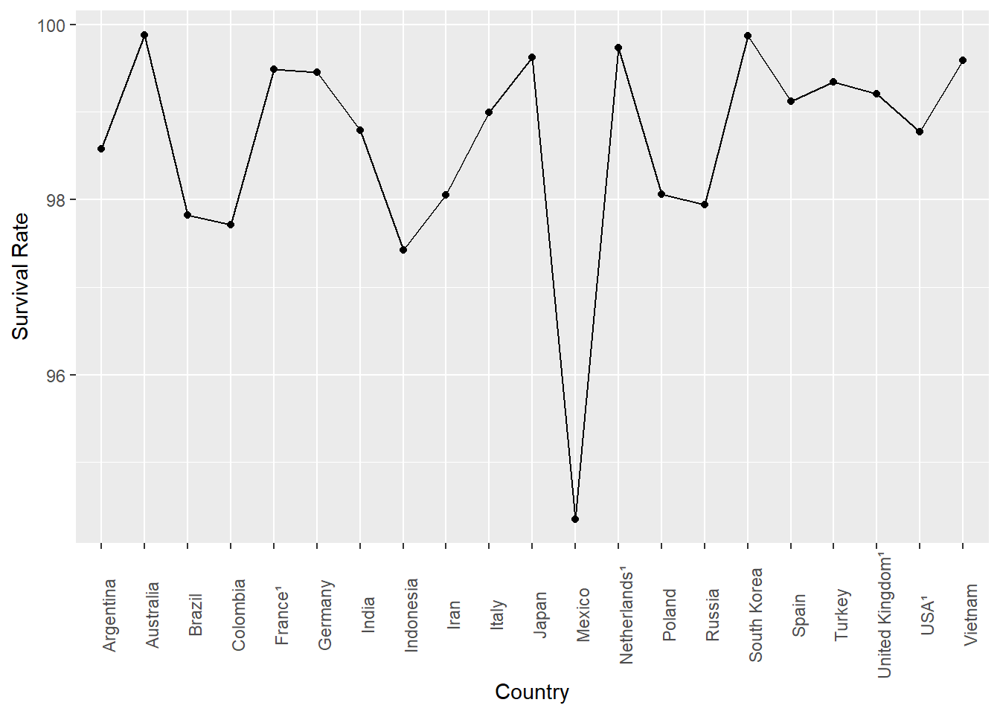
or a variant:
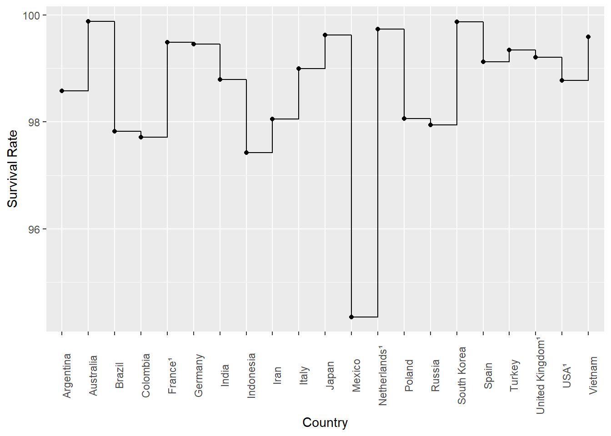
Technically, it’s wrong to present this data in a line chart, because it is discrete values and does not represent a trend, but it is surprisingly common - probably because it ‘looks more sciency’…
2.1 Summarizing Data with Numbers
Above, we simply plotted a single variable of interest, and showed that some very basic changes to how it was displayed had the potential to ‘lead’ the reader to different conclusions. Even that simple tweaking is a powerful way to change opinion, and used in the wrong way can be very misleading.
Now, let’s think about the idea of an even simpler way to describe data - by summarizing it with just some numbers.
For this example, I am going to use data on GDP per head in 2020 for each nation, from the World Bank.
Before I do anything else, I’m going to graph it again. This time I will use a histogram, which is similar to a bar chart, but not the same thing.
Specifically, a bar chart is used when we are displaying discrete categories. So, above, we had 20 countries, and a single bar for each country.
A histogram is instead when we divide our data into ‘groups’ of similar values, which are called ‘bins’. Thus, each ‘bar’ on a histogram represents the number of elements (in this case, countries) which fall in that bin. So, in this case, we can divide the GDP variable into bins.
As an example, we can divide GDP per head into ‘bins’ of US$10000, and plot a histogram
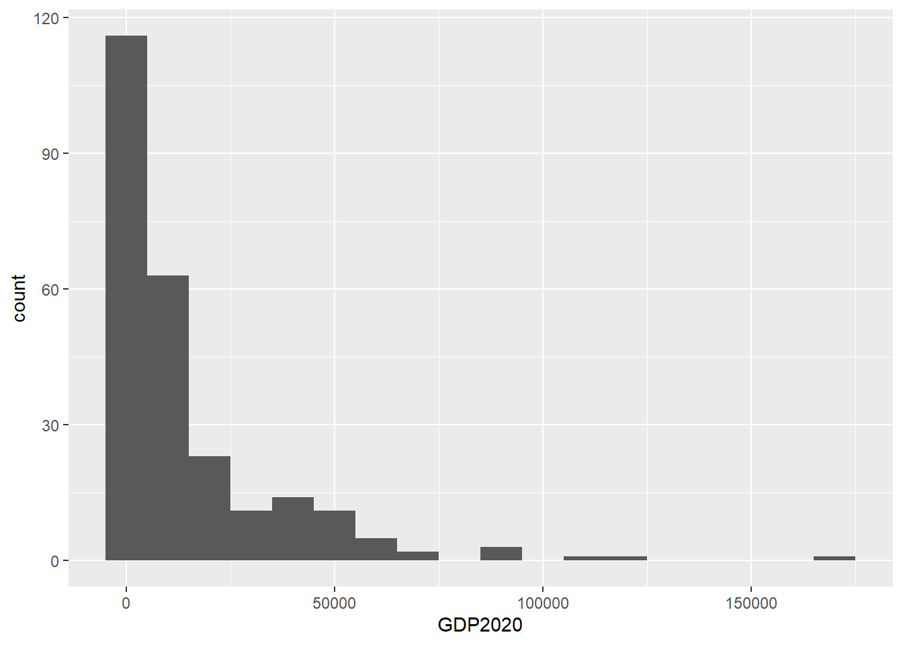
As you can see, there are nearly 120 countries in the first bin, which you can also see runs from -5000 to 5000 dollars. Of course, we know there are no countries with negative GDP per head, but this is just an artefact of the binning process.
This sort of chart gives us something very different to a bar chart. Instead, it is really a frequency distribution, and it charts the frequency of values of a given variable - in this case GDP per head.
So, here we have some idea of the distribution of the variable. It’s clearly skewed quite heavily, with some outliers at the high end.
Let’s move on to summarize this variable with some numbers:
##
## GDP2020
## --------------- -----------
## Mean 15162.61
## Std.Dev 22146.53
## Min 233.84
## Median 6117.49
## Max 173688.19
## N.Valid 251.00
## Pct.Valid 94.36What we have here are the classic ‘summary statistics’ for 2020 GDP per head.
One thing missing - which admittedly is not very useful in this case, is the Mode, or the ‘most frequent’ value.
## [1] 1875.441There you have it, the mode is 1875.441.
One important thing to note here is that the word average is badly misused when talking about data. Specifically, the mean, median, and mode can all at one time or the other be referred to as the average value of a given variable. But, as you can see, they are all different numbers! The word ‘average’ is a very vague word to use in this context, so do be careful about when you use it. You should always default to using the specific term you are talking about.
A few other summary statistics are calculated for 2020 GDPph below
## Min. 1st Qu. Median Mean 3rd Qu. Max. NA's
## 233.8 2127.5 6117.5 15162.6 18072.4 173688.2 15## [1] 15944.94## [1] 173454.4What we have here now includes the range (173454.4) and the interquartile range (15944.94), which are both useful measures of how ‘spread out’ the data is.
Each of the summary numbers above has strengths and weaknesses when describing different types of data. Here, we will mainly talk about the sensistivity to outliers.
Specifically, the median and interquartile range are less sensitive to outliers as measures of central tendency and range respectively than their counterparts the mean and the range. So, that’s why you commonly see the median used so frequently in these sorts of situations.
But, what do we mean by outliers? Let’s look at this in the context of another graphical display, the box plot.
2.2 Box Plots
The box plot (and the other displays below) are criminally underused in my opinion. Most of us calculate a box plot at school, and then never again. But, it’s a really useful way to understand a data set.
Let’s do a boxplot for the 2020 GDPph data:
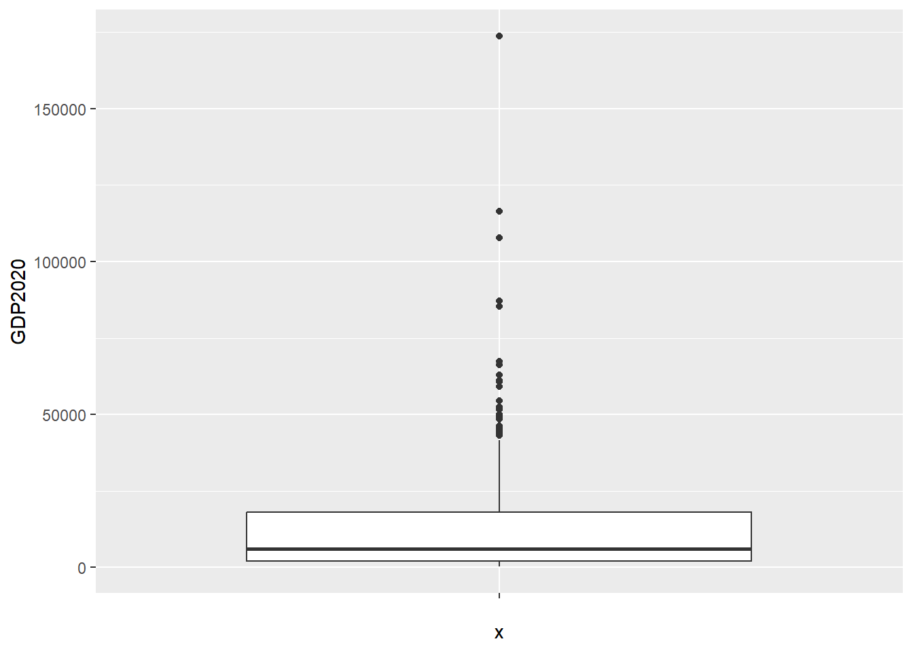
A box plot presents a lot of information very efficiently. The median is the thick horizontal, the white rectangle is bounded by the interquartile range, and outliers are represented as dots.
We can see here that the data is very skewed, and there are some very significant outliers at the high end (no prizes for guessing which countries they are).
A weakness of a box plot is that it doesn’t actually show the distribution of the data. One way to do this is to add what is called jitter, which actually plots the values of each case, with a ‘jitter’ to avoid overlapping identical values.
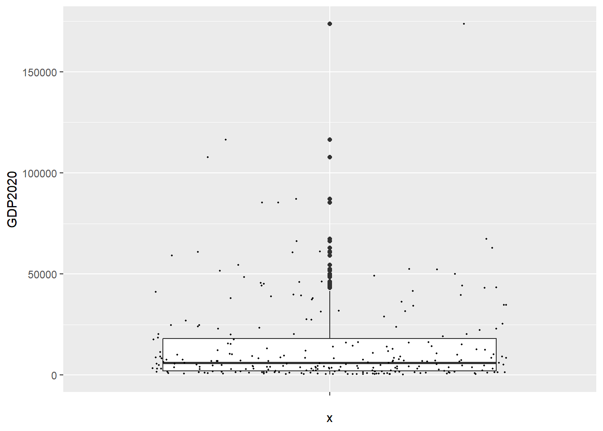
So, we can see here that most of the data is clustered towards the bottom of the range - i.e. very low GDPph. This is of course the same conclusion as the historgram allowed us to draw. But, the box plot also gives us plenty of other information about the variable.
Even so, while box plots are nice, they can also obscure important facts about the distribution. Adding the jitter helps, but there are other ways to display this type of data that make the distribution more obvious.
2.3 Violin Plots and Ridge Plots
Here, I’m going to give you a set of even more underused data displays, which can show some powerful things about variables.
In order to do so, I am going to simulate some data, to make sure it has exactly the features I want to show.
First, let’s create the data and use box plots to display it, such as you are already experienced with above.
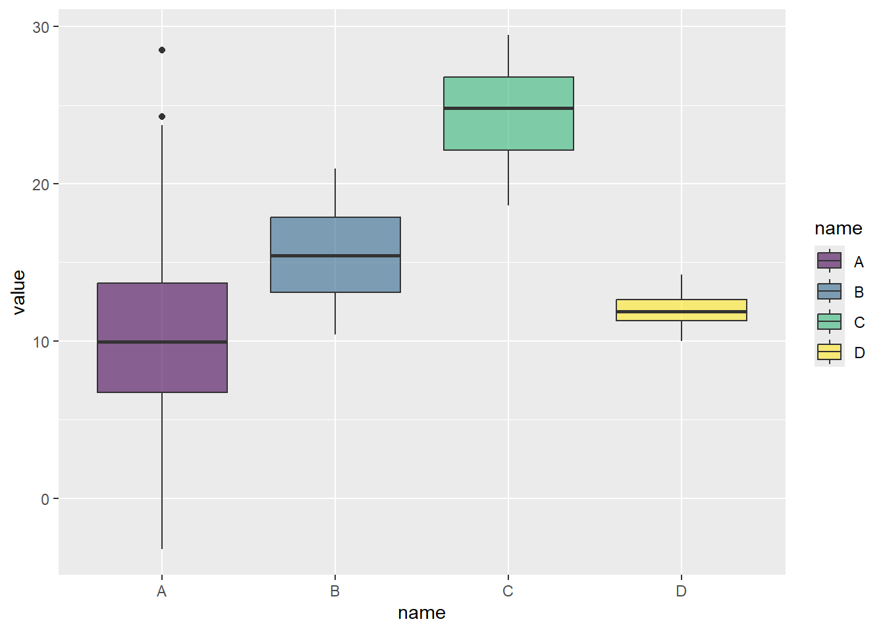
That’s all very well, but as we know, this can obsure the distribution. So, let’s add jitter:
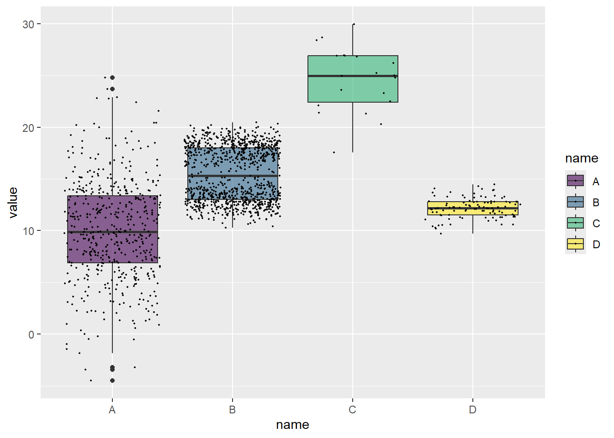
Well, look at that. B has what is called a bimodal distribution.
Lets look at what is called a violin plot to emphasize this:
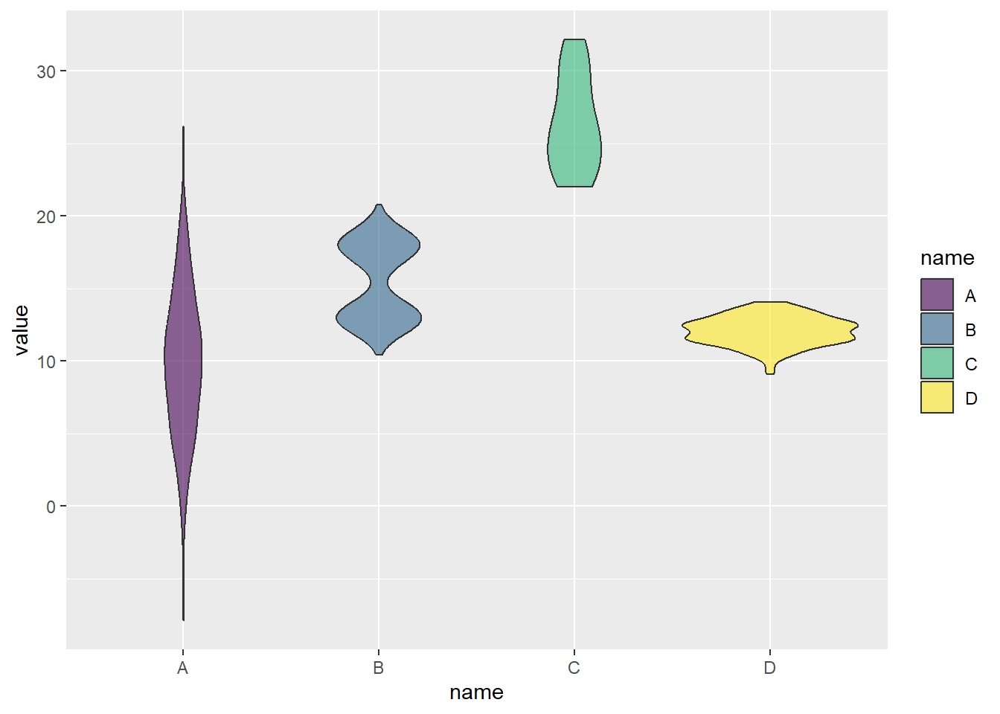
Neat! You can see how the violin plot really emphasizes the differences in the distributions, which are totally obscured by the box plots, and only partially shown by adding the jitter.
Another way to visualize this is with ridges, which basically compare the distributions of variables together:
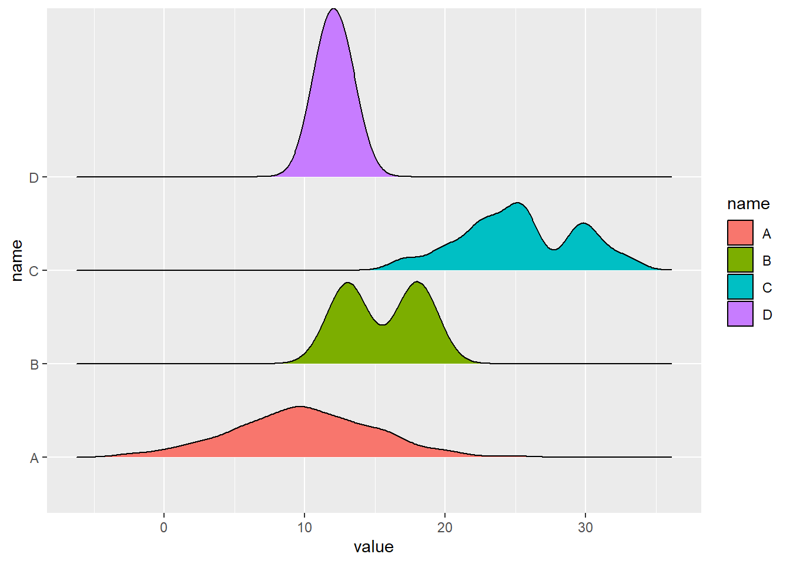
These are really cool in my view. And, if you are asking me, my preference in this type of situation would be to combine jittered box plots, which show the basics, and emphasize the outliers and summary numbers, with ridge plots, which show a really nice visualization of the distributions of each variable. Taken together, these plots allow us to understand a surprisingly large amount of important information about variables.